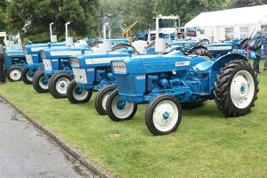
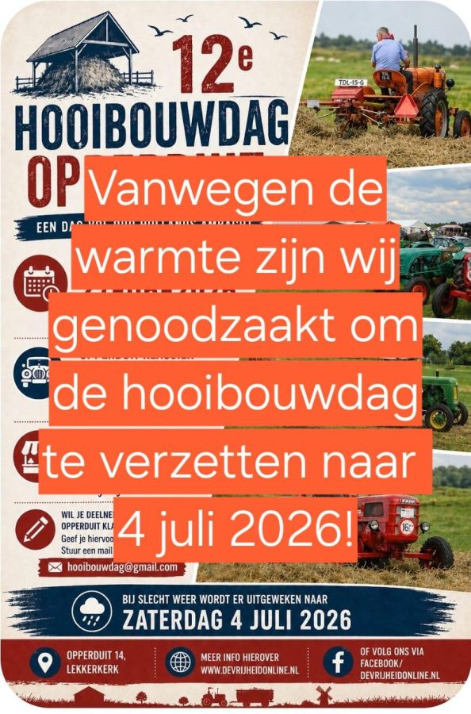
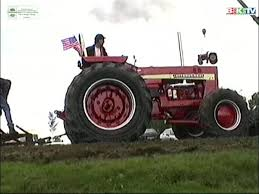

Berichten van de club
Mededelingen, verslagen en historie, vers van het erf.

Thema tocht gaat door
De thema tocht die voor zaterdag 27-06 op de planning staat gaat gewoon door. Verzamelen zoals gebruikelijk bij de loods.
Lees verder →
Hooibouwdag verzet naar 4 juli
De Hooibouwdag in Lekkerkerk is vanwege de verwachte warmte verplaatst van 27 juni naar zaterdag 4 juli.
Lees verder →
Oude film Landbouwdag 28 augustus 1998
Via de mail ontvingen wij prachtig oud filmmateriaal van de Landbouwdag uit 1998. Een mooi stukje clubgeschiedenis.
Lees verder →Terugblik op een geslaagde Snertrit
Ondanks de regen reden ruim tachtig trekkers mee. Na afloop dampende snert in de loods. Het kon niet stuk.
Lees verder →Nieuw verenigingsblad verschenen
De najaarseditie van ons verenigingsblad ligt op de mat. Met een uitgebreid verslag van de toertocht en techniektips.
Lees verder →Vrijwilligers gezocht voor de Landbouwdag
Voor onze jaarlijkse Landbouwdag zoeken we leden die willen helpen met opbouw, verkeer en catering.
Lees verder →